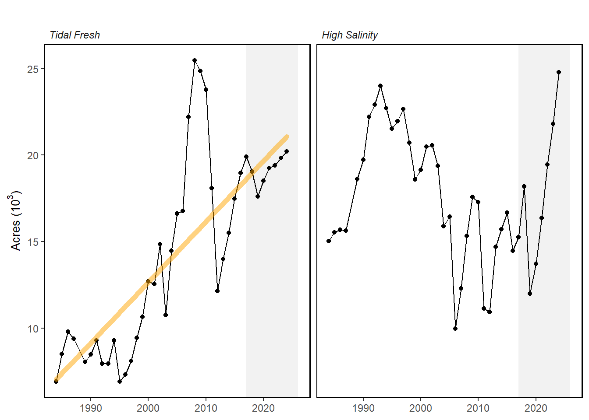

4 Chesapeake Bay Submerged Aquatic Vegetation
Last updated July 23, 2026
Description: The data provided here are the 1984-2024 area distribution and percent coverage of submerged aquatic vegetation in the Chesapeake Bay and its tributaries that area measured and calculated from photo-interpreted aerial imagery taken during surveys conducted in the growing season.
Contributor(s): Christoper J. Patrick, David J. Wilcox, Jennifer R. Whiting, Anna K. Kenne, Erica R. Blue, Matthew J. Smith
Affiliations: VIMS
Indicator Family:
Indicator Category:
Synthesis Theme:
4.1 Introduction to Indicator
Underwater grass beds are critical to the Chesapeake Bay ecosystem. They provide food and shelter to fish and wildlife, sequester carbon, add oxygen to the water, absorb nutrient pollution, reduce shoreline erosion and help suspended particles of sediment settle to the bottom. Because they are sensitive to pollution but quick to respond to improvements in water quality, underwater grass abundance is a good indicator of the Bay’s health. Before Europeans colonized the region, up to 600,000 acres of underwater grasses may have grown along the shorelines of the Bay and its tributaries. By the mid-1980s, nutrient and sediment pollution had weakened or eliminated many of these grass beds. While climate change, shoreline hardening and stressors that reduce water clarity will continue to impact our restoration success, many of these stressors can be managed with on-the-ground efforts to reduce pollution and research has shown that nutrient reductions made under the Chesapeake Bay Total Maximum Daily Load (Bay TMDL) have played a critical role in the overall underwater grass recovery documented since the Bay-wide aerial survey began in 1984.
4.2 Key Results and Visualizations
Significant increases and simultaneous decreases in different regions of the bay resulted in little net change in total SAV coverage between 2023 and 2024 (1% decline, -216 hectares, -533 acres). The Polyhaline and Oligohaline zones saw significant increases in SAV, there was a modest increase in the Tidal Fresh zone, and the Mesohaline zone suffered significant declines. The Polyhaline zone increased 14% relative to 2023 (1,212 hectares, 2,996 acres). Segments across the Polyhaline all increased with the largest gains (hectares/acres) occurring in Mobjack Bay, Poquoson Flats, and nearby Western Shore areas. Significantly, this is most SAV reported in the Polyhaline Zone in the history of the survey, surpassing the previous record set in 1993 by 317 hectares (783 acres). These gains, largely attributable to eelgrass, add to a pattern of consecutive year over year increases in the Polyhaline since the 2019 crash and extension of the meadows into deeper waters. This may indicate improved water clarity in this area of the Bay. The Tidal Fresh Zone was stable, exhibiting a 2% increase (149 hectares, 369 acres) and the Oligohaline Zone showed a 46% increase (584 hectares, 1,442 acres), driven by simultaneous recoveries in multiple areas including the Sassafras, Gunpowder, Back, and Middle Rivers, as well as increases in observed SAV in the Potomac River. In contrast, the Mesohaline underwent a 14% decline (-2,161 hectares, -5,340 acres), which largely occurred along the Eastern Shore of Maryland in the Choptank (-895 hectares, -2,212 acres) and Little Choptank Rivers (-302 hectares, -746 acres) as well as Tangier Sound (-801 hectares, -1,979 acres). The declines in the Choptank mirror measured reductions in water quality within the river, highlighting the strong coupling between water quality and SAV within the Chesapeake Bay, and down-bay declines in Tangier Sound may be connected. These contrasting changes observed throughout the system reflect the incredible diversity of geographic regions, land-use regimes, SAV species, and local environmental conditions that contribute in aggregate to Baywide SAV status each year.
Mid-Atlantic

4.3 Implications
Bay-wide: In 2024, 82,778 acres of SAV were mapped in the Chesapeake Bay. This is 45% of the Bay SAV goal:
- Tidal Fresh Salinity Zone: 20,218 acres in 2024 achieving 98% of the area’s 20,602-acre goal.
- Oligohaline Salinity Zone: 4,730 acres in 2024 achieving 46% of the area’s 10,334-acre goal.
- Mesohaline Salinity Zone: 33,031 acres in 2024 achieving 27% of the area’s 120,306-acre goal.
- Polyhaline Salinity Zone: 24,800 acres in 2024 achieving 74% of the area’s 33,647-acre goal.
The outlook toward achieving the outcome goal is off course. Significant increases and simultaneous decreases in different regions of the Bay resulted in little net change in total SAV coverage between 2023 and 2024 (1% decline, -260 hectares, -641 acres). It is unlikely that we will meet the interim goal of 130,000 acres by 2025.
4.4 Indicator statistics
Spatial scale: The data covers the tidal Chesapeake Bay region.
Temporal scale: 1984-2024, annual
Variable definitions
4.5 Get the data
Point of contact: Christoper J. Patrick (cpatrick@vims.edu), David J. Wilcox (dwilcox@vims.edu)
ecodata dataset: ecodata::SAV
Tech Doc link: https://noaa-edab.github.io/tech-doc/SAV.html